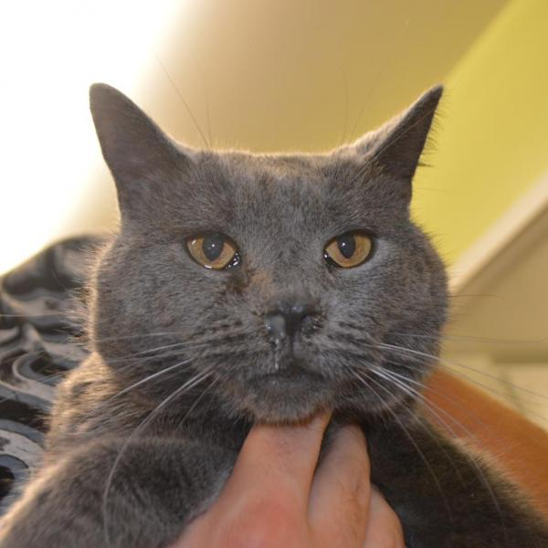

|  |
Fiona |
|---|
"Hello! Are you looking for a large and in charge kinda gal? Then you are for sure looking for me!
My name is Fiona and I'm 5 year old sweetheart. That's right, I'm the sweetest cat ever! Okay, well that may be an exaggeration, but I am pretty lovable. I came to SVASC as a stray that had been hanging out for awhile and had gotten a little cold, but now I'm ready to find myself a family! I love people and would be more than happy to sit in your lap while you catch up on your soaps or snooze on the back of the couch while you read the newspaper. I do get along with other kitties and have been making great pals with my foster siblings. I am also a good fit for a home with kids, as I am a pretty gentle gal and don't mind handling. I would prefer a home without any dogs, please.
| Vital Statistics | Favorite Foods | Favorite Hobbies | Secret Talent | ||||||||
|---|---|---|---|---|---|---|---|---|---|---|---|
|
|
|
|
Last updated February 14 2020 by Calum Canard